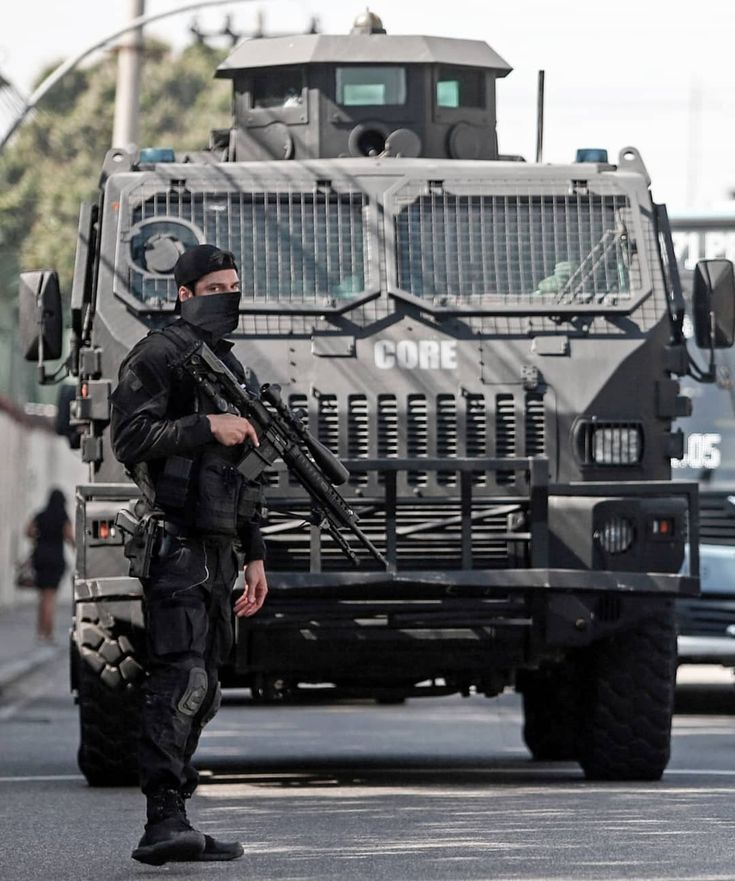

Sobre a PolÃcia Civil
A PolÃcia Civil (PC) é a polÃcia judiciária do Brasil, focada na investigação de crimes, coleta de provas e identificação de criminosos, culminando na elaboração de inquéritos policiais. Atua em diversas funções como Delegado, Escrivão e Investigador. Além disso, a PC possui Grupos de Operações Especiais (como GOE, GARRA, TIGRE, CORE), que são unidades de elite responsáveis por ações táticas de alto risco, como resgate de reféns e cumprimento de mandados contra criminosos perigosos, complementando o trabalho investigativo com capacidade de intervenção.
Requisitos para Ingresso :
- 📌 NÃvel Superior completo;
- 🯠Idade mÃnima 18 anos;
- 🚗 Carteira de Habilitação (CNH);
- 📠Aprovação em concurso público estadual;
- ⚖️ Habilitação JurÃdica (para Delegado);
- 🏋️ Testes fÃsicos, psicológicos, médicos e investigação social;
- 📠Curso de formação na Academia da PolÃcia Civil.

